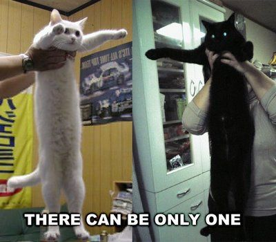

Ministre du logement : Maru

Maru se cache sous le canapé, Maru escalade son arbre à chat, Maru dort dans
l’évier... Mais
surtout, Maru
rentre dans les cartons. Tous les cartons. Aucun n’est trop petit. Et s’ils sont ouverts sur deux côtés, c’est
le must : Maru prend de l’élan, fonce dedans tête la première et glisse à plat ventre sur le plancher lustré.
Plébiscité par ses millions de fans sur YouTube depuis 2008, Maru a également ouvert un blog, sorti un livre et
un DVD pour s’exhiber sous toutes ses coutures.
Ministre des transports : Nyan Cat

Durant trois minutes et trente-sept secondes, un chat pixelisé doté d’un corps en
biscuit rose
traverse l’espace, suivi d’un arc-en-ciel ondulant et accompagné d’une musique insupportablement répétitive dont
les paroles font, en gros : «Nya nya nya nya nya...» Bilan : 50 millions de vues. D’innombrables variantes et
détournements de l’absurde créature, débarquée en mai 2011, ont envahi le web : vidéos, dessins, gâteaux,
bijoux, déguisements...
Origine
L’animation du chat a été réalisée par Christopher Torres sous le pseudonyme «
PRguitarman » le 2 avril 2011. Il l’a fait pour que cela soit mignon2. L’utilisateur de YouTube saraj00n, a
combiné l’animation du chat avec la version du son Nyanyanyanyanyanyanya! mise en ligne sur Nico Nico Douga par
l’utilisateur saraj00n sur une vidéo et l'a envoyée sur YouTube le 5 avril 2011. Momomomo a mis en ligne sa
version du son Nyanyanyanyanyanyanya!, fait avec Momone Momo (un UTAU), sur Nico Nico Douga le 31 janvier 20113.
Le son original, conçu avec vocaloid Hatsune Miku, a été téléversé par daniwellP sur Nico Nico Douga le 25
juillet 2010 et il l’a appelé Nyanyanyanyanyanyanya! Les paroles de la chanson font référence à l'onomatopée
japonaise du miaulement : nya.
Miniiiiiiiiiistre : Longcat

Shiroi de son vrai nom, Longcat est apparu sur le web japonais entre 2004 et 2005. Il
n’obtient son sobriquet qu’en 2006, notamment grâce au forums américains de 4chan où les internautes s’amusent à
allonger son ventre à grands coups de Photoshop ( «Longcat is looooong» ). Il obtient un statut quasi mythique
en 2009, lorsqu’une prophétie annonce l’évènement du «Catnarok» , qui verra s’affronter dans une terrible
bataille Longcat et Tacgnol, son némésis tout noir.
"Certains pensent qu’Internet est une série de tubes; d’autres qu’il est fait de
câbles, de lasers et de
chapeaux. Mais ils ont tout faux car Internet est fait de chats !"
Joel Veitch